iOS-App für die Fährtenarbeit
Handbuch
Alles, was du brauchst, um Fährten zu legen, sie zu arbeiten und dein Training langfristig zu verfolgen.
Zuletzt aktualisiert: 17. Oktober 2026
Das Handbuch zeigt Trax auf Deutsch, so wie die App mit Version 2.1 kommt. Bis dahin ist die App auf Englisch, die Funktionen sind dieselben.
01
Erste Schritte
Trax ist für Hundeführer gemacht, die Fährtenarbeit trainieren. Du legst die Fährte mit dem Handy in der Tasche, markierst unterwegs Gegenstände und arbeitest die Fährte danach mit deinem Hund, während die App zeigt, wo der Fährtenleger gegangen ist.
- Wenn du die App zum ersten Mal öffnest, bekommst du eine kurze Einführung. Tippe auf „Weiter“, um sie durchzugehen.
- Tippe auf „Standortzugriff erlauben“ und wähle „Beim Verwenden der App erlauben“.
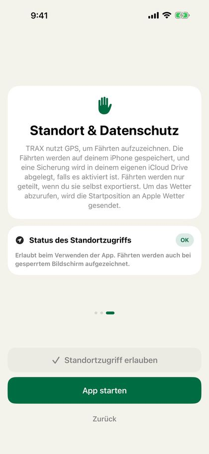
Tipp: „Beim Verwenden der App“ reicht aus. Sobald du auf „Start“ getippt hast, läuft die Aufzeichnung auch bei gesperrtem Bildschirm oder wenn du die App wechselst weiter, und iOS zeigt oben auf dem Bildschirm eine blaue Markierung. Den Zugriff änderst du auf dem iPhone unter Einstellungen › Trax › Standort.
Trax braucht „Genauer Standort“. Ohne ihn kann die Position mehrere hundert Meter danebenliegen. Ist er ausgeschaltet, fragt die App nach dem genauen Standort, wenn du eine Fährte legst oder arbeitest, und zeigt die Karte „Genauer Standort ist aus“ mit einem Link zu den Einstellungen. Schalte dort „Genauer Standort“ für Trax ein.
Trax und das Handbuch folgen der Sprache des Handys: Deutsch, Englisch, Norwegisch (Bokmål) oder Schwedisch.
02
Startbildschirm
Hier beginnt alles, und hier findest du alle deine Fährten.
Der grüne Kopfbereich zeigt die Zahlen für diesen Monat: Anzahl der Fährten, Gesamtlänge, Funde und wie viele Fährten bereit sind. Die Symbole oben rechts sind Importieren, Handbuch und Einstellungen. „Importieren“ öffnet eine Fährte aus einer Trax- oder GPX-Datei, zum Beispiel eine Fährte, die dir jemand geschickt hat.
- „Bereite Fährten“ sind Fährten, die gelegt, aber vom Hund noch nicht gearbeitet wurden. Sie erscheinen oben als große Kartenkarten, und wenn du mehrere hast, wischst du seitwärts. Die Karte zeigt den Status („Bereit“, „Bereit in …“, während das Fährtenalter heruntergezählt wird, oder „Fährte läuft“, wenn die Fährte gestartet, aber nicht gestoppt wurde), das Fährtenalter, die Länge und die Anzahl der Gegenstände.
- „Start“ auf der Karte bringt dich direkt zur Fährte. Tippst du sonst auf die Karte, öffnet sich die Fährtenübersicht. Halte den Finger auf der Karte und wähle „Löschen“, um die Fährte zu löschen.
- „Letzte Fährten“ zeigt die drei zuletzt abgeschlossenen Fährten. Jede Zeile hat eine kleine Karte mit der Fährtenart als Abzeichen, Datum, Länge und Hund in einer Zeile und rechts die Funde, zum Beispiel 3/3. Tippe auf eine Fährte, um die Details zu sehen.
- Mit „Bearbeiten“ neben „Letzte Fährten“ wählst du Fährten aus und löschst sie. „Alle“ öffnet die Seite „Fertige Fährten“ mit allen deinen Fährten.
- „Neue Fährte“ ist der grüne Knopf unten und startet das Fährtenlegen.
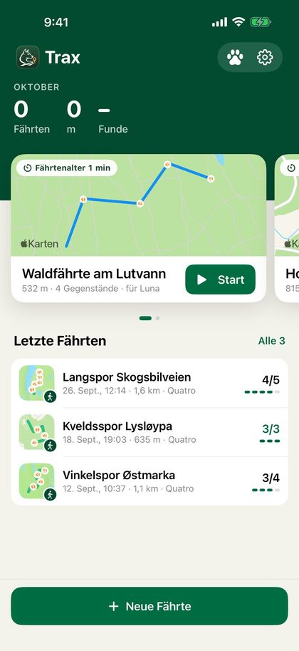
Auf der Seite „Fertige Fährten“ sind die Fährten nach Monat gruppiert. Oben rechts findest du den Dokumentknopf für ein PDF pro Hund und „Bearbeiten“, um mehrere Fährten zu löschen.
- Hast du Hunde angelegt, erscheinen oben Knöpfe: „Alle“ und einer für jeden Hund, mit dem Anfangsbuchstaben des Hundes in Farbe. Fährten ohne Hund stehen unter „Alle“. Wählst du einen Hund, siehst du nur seine Fährten und eine Zusammenfassung mit der Anzahl der Fährten, dem Anteil gefundener Gegenstände, der Anzahl der Fährten in den letzten 30 Tagen und „Auf der Fährte“, dazu eine Grafik der Entwicklung (siehe „Hunde“). Hat der Hund keine abgeschlossenen Fährten, steht dort „… hat noch keine abgeschlossenen Fährten.“
- Hunde, die du gelöscht hast, behalten ihren Knopf, solange sie Fährten haben. Um einen solchen Hund auszublenden, hältst du den Finger auf seinem Knopf und wählst „Im Filter ausblenden“. Unter Einstellungen › Meine Hunde › „Frühere Hunde“ kannst du ihn wieder einblenden.
- Haben die Fährten auf der Seite mindestens zwei Fährtenarten, erscheinen unter der Zusammenfassung Knöpfe für die Fährtenart: „Fährte“, „IGP-Fährte“, „Schweißfährte“, „Gegenstandssuche“ und „Flächensuche“. Gibt es mindestens zwei Arten von Fährten (Fährte, IGP-Fährte oder Schweißfährte), steht außerdem „Alle Fährten“ an erster Stelle. Dort siehst du nur Fährten. Gegenstandssuche und Flächensuche sind eigene Übungen und erscheinen nur unter ihren eigenen Knöpfen, mit eigener Statistik (siehe „Suche: Gegenstandssuche und Flächensuche“).
- Kleine Symbole in der Zeile zeigen, ob die Fährte importiert wurde (Pfeil hinein) und ob du sie exportiert hast (Pfeil hinaus).
03
Fährte legen
Als Fährtenleger gehst du die Fährte zuerst, während die App die Route per GPS aufzeichnet.
- Tippe auf dem Startbildschirm auf „Neue Fährte“.
- Wähle die Übung mit den großen Knöpfen: „Fährte“, „IGP-Fährte“, „Schweißfährte“ oder „Suche“. „Fährte“ ist vorausgewählt (siehe „Fährtenart und Schweißfährten“ und „Suche: Gegenstandssuche und Flächensuche“).
- Das GPS startet, sobald sich der Bildschirm öffnet. Warte, bis der GPS-Punkt oben grün oder gelb ist, und tippe auf den großen grünen Knopf „Start“.
- Geh die Fährte. Die Route wird beim Gehen auf der Karte gezeichnet.
- Tippe auf „Gegenstand“, um dort, wo du stehst, einen Gegenstand abzulegen (siehe „Gegenstände“).
- Brauchst du eine Pause, tippst du auf „Pause“. Tippe auf „Fortsetzen“, um weiterzugehen. Die Strecke während der Pause wird nicht aufgezeichnet.
- Tippe auf „Stopp“, wenn die Fährte fertig gelegt ist.
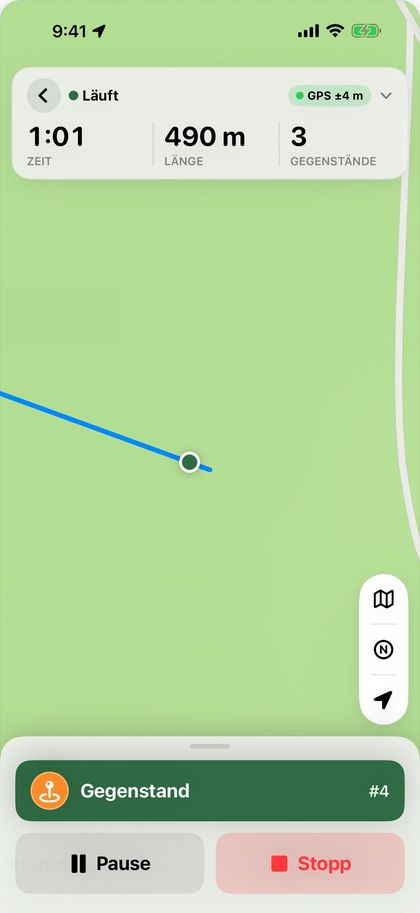
Ist das GPS-Signal vor dem Start schwach, erscheint unter dem Feld oben ein Kasten. Rot bedeutet, dass du auf ein besseres Signal warten solltest, Gelb, dass du starten kannst, die Fährte aber genauer wird, wenn du wartest. Der Kasten schließt sich von selbst, wenn das Signal gut ist, oder wenn du auf „OK, verstanden“ tippst. Starten kannst du immer.
Das Feld oben zeigt Zeit, Länge und Anzahl der Gegenstände in großen Zahlen, wie genau das GPS ist, und den Akkustand. Ein grüner Punkt bedeutet besser als 10 Meter, Gelb 10–25 Meter und Rot mehr als 25 Meter. „Kein GPS“ heißt, dass das Handy seit mehr als 15 Sekunden keine Position hat. Tippe auf das Feld, um zu sehen, wann die Fährte gestartet wurde, wann die Position zuletzt aktualisiert wurde und auf welcher Koordinate du stehst.
Wenn du auf „Start“ tippst, zoomt die Karte auf dich, immer auf denselben Ausschnitt. Zoomst du während der Fährte, behält die Karte den Zoom, den du gewählt hast.
Die Kartenknöpfe rechts sind in einer Kapsel zusammengefasst. Der oberste Knopf öffnet das Kartenmenü, in dem du „Karte“, „Topo“ oder „Satellit“ wählst und „Nachtmodus“ ein- oder ausschaltest (siehe „Nachtmodus“). Topo ist die topografische Karte der norwegischen Landesvermessung (Kartverket) mit Höhenlinien und Wegen. Sie braucht Internet, zeigt unten „© Kartverket“ und gibt es nur in Norwegen. Der N-Knopf wechselt die Kartenausrichtung: Norden oben oder eine Karte, die sich mit deiner Blickrichtung dreht. Deine Wahl wird gespeichert und lässt sich auch unter Einstellungen › Karte und Fährten ändern. Der unterste Knopf zentriert die Karte wieder auf dich.
Der Pfeil über den Kartenknöpfen zeigt den Wind (siehe „Wetter“).
Während du die Fährte legst, erscheint sie auf dem Sperrbildschirm und in der Dynamic Island mit Zeit, Länge und Anzahl der Gegenstände. Auf dem Sperrbildschirm kannst du auf „Pause“ oder „Fortsetzen“ tippen und auf „Gegenstand“, um einen Gegenstand abzulegen, ohne das Handy zu entsperren.
Wichtig: Tippst du auf den Zurückpfeil oben links im Feld, bevor die Fährte gestoppt ist, fragt die App, ob du die Fährte verwerfen oder stoppen und sichern willst. Eine verworfene Fährte lässt sich nicht wiederherstellen.
04
Fährtenart und Schweißfährten
Wähle, ob die Fährte eine normale Fährte, eine IGP-Fährte oder eine Schweißfährte ist. Schweißfährten haben eigene Knöpfe und eigene Optionen. Gegenstandssuche und Flächensuche findest du unter „Suche“ (siehe „Suche: Gegenstandssuche und Flächensuche“).
Die Fährtenart wählst du mit den großen Knöpfen unter „Wähle die Übung vor dem Start“ auf dem Bildschirm zum Fährtenlegen, bevor du auf „Start“ tippst. Ändern kannst du sie danach in der Karte „Fährtenart“ in der Fährtenübersicht. Die Fährtenart steht bei der Fährte, im PDF und in der Datei, wenn du die Fährte verschickst.
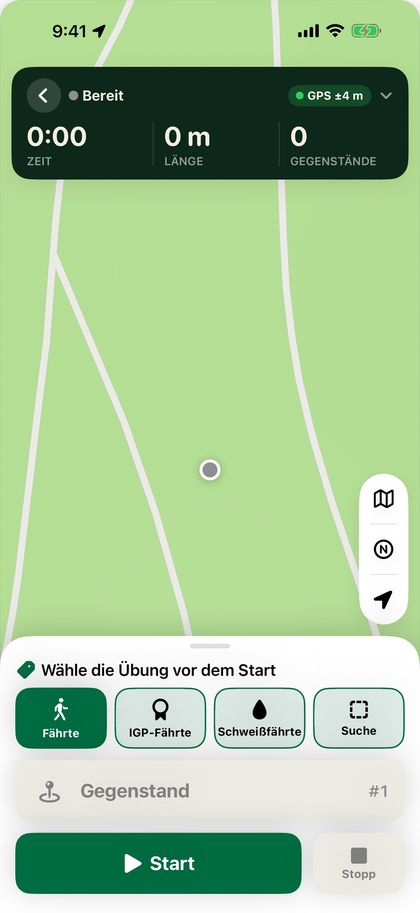
Bei einer Schweißfährte wird „Gegenstand“ durch drei Knöpfe ersetzt:
- „Wundbett“ setzt dort, wo du stehst, ein Wundbett. Es erscheint als dunkelroter Tropfen auf der Karte.
- „Schweißpause“ markiert, dass ab hier kein Schweiß liegt. Solange die Schweißpause dauert, heißt der Knopf „Schweiß wieder“. Tippe darauf, wo der Schweiß wieder beginnt. Die Schweißpause erscheint als gestrichelte weiße Linie auf der Fährte.
- „Stück“ markiert, wo das Stück liegt, mit einer braunen Zielflagge auf der Karte.
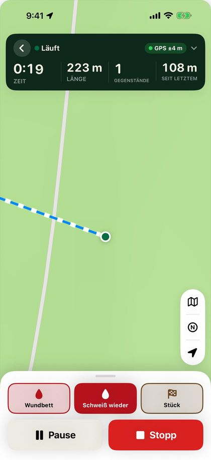
Wo die Schweißfährte beginnt, erscheint der „Anschuss“ mit einem Pfeil für die Fluchtrichtung. Nach „Stopp“ und später in der Fährtenübersicht wählst du die „Fluchtrichtung“: „Automatisch“ (aus den ersten 15 Metern der Fährte), eine Himmelsrichtung oder „Kein Pfeil“. Schalte „Fluchtrichtung für Hundeführer zeigen“ aus, wenn die Fluchtrichtung nicht markiert sein soll, zum Beispiel bei einer Nachsuche. Anschuss und Pfeil erscheinen auch, wenn die Fährte blind gearbeitet wird.
In der Karte „Schweiß und Fährtenschuh“ trägst du die Schweißmenge in dl ein (optional) und schaltest „Fährtenschuh/Schalen“ ein oder aus. Unter dem Feld siehst du den Schweiß pro 100 Meter Fährte. Weniger Schweiß pro 100 Meter macht die Fährte schwerer. Deine letzten Werte werden beim nächsten Mal vorgeschlagen.
Schweißfährten haben eigene Optionen für das Fährtenalter, von 30 Minuten bis 24 Stunden (siehe „Fährtenalter“).
Wird die Schweißfährte gearbeitet, zählen Wundbett und Stück als Gegenstände. Der Hinweis lautet „Nahe am Wundbett“ oder „Nahe am Stück“, und der Fund wird als „Wundbett als gefunden erfasst“ registriert. Vor einer Schweißpause und bevor der Schweiß wieder beginnt, gibt die App die Hinweise „Schweißpause“ und „Schweiß wieder“ (siehe „Hinweise und Sprachansagen“).
Die Fährtenübersicht und das PDF zeigen „Wundbetten, Stück und Schweißpausen“ mit der Länge jeder Schweißpause sowie Schweißmenge und Fährtenschuh. Die Schweißmenge steht auch im Hundebericht und auf dem Bild für soziale Medien.
05
Suche: Gegenstandssuche und Flächensuche
Suchen sind eigene Übungen, keine Fährten. Du legst ein Feld oder eine Fläche auf die Karte, legst Gegenstände aus oder stellst Personen auf, und der Hund sucht innerhalb eines Zeitlimits.
- Tippe auf „Neue Fährte“ und dann auf „Suche“. Wähle „Gegenstandssuche“ oder „Flächensuche“. Deine Wahl steht dann an der Stelle des Knopfes „Suche“, und du kannst erneut darauf tippen, um zu wechseln.
- Das Feld (oder die Fläche) wird dort auf die Karte gelegt, wo du stehst, mit der Startlinie bei dir. Ist das Wetter abgerufen, wird es so gedreht, dass der Hund gegen den Wind geschickt wird. Sonst zeigt es nach Norden.
- Wähle die Größe im Menü links: Die Gegenstandssuche hat „Feld 50 × 50 m“ und „Korridor 10 × 50 m“, die Flächensuche „Fläche 100 × 100 m“ und „Fläche 100 × 200 m“. Du kannst Breite und Länge auch selbst wählen.
- Wähle das Zeitlimit im Menü rechts. Standard sind 15 Minuten für die Gegenstandssuche und 1 Stunde für die Flächensuche. Die Auswahl wird für Gegenstandssuche und Flächensuche getrennt gespeichert.
- Passe die Lage mit den Knöpfen darunter an: „Links drehen“ und „Rechts drehen“ drehen das Feld schrittweise, „Gegen den Wind“ dreht es gegen den Wind, und „Hier starten“ verschiebt die Startlinie dorthin, wo du stehst.
- Tippe auf „Start“, wenn das Feld richtig liegt. Die Knöpfe für Größe, Zeit und Lage verschwinden dann.
- Geh in das Feld und tippe auf „Gegenstand“, wo du jeden Gegenstand ablegst. Bei der Flächensuche gibt es außerdem den Knopf „Versteckperson“, um dort, wo du stehst, eine Person zu platzieren.
- Tippe auf „Stopp“ und sichere wie gewohnt.
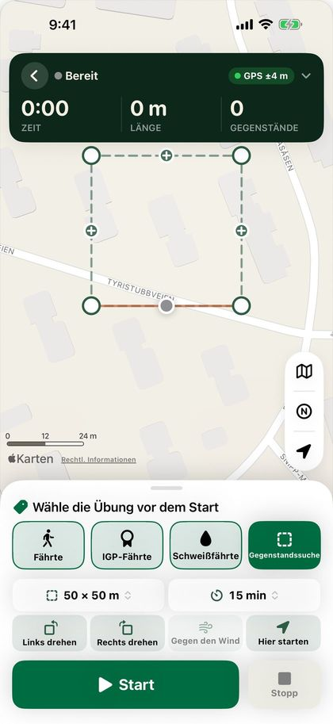
Das Feld muss nicht rechteckig sein. Halte und ziehe die Ecken, um sie zu verschieben, und ziehe das + in der Mitte einer Kante, um eine neue Ecke zu erstellen. Im Größenmenü steht dann „Eigene Form“, und „Zurück zum Rechteck“ im selben Menü macht es rückgängig. Die Form kannst du ändern, bis du auf „Stopp“ tippst.
Wenn der Hund suchen soll, öffnest du die Suche unter „Bereite Fährten“ und tippst auf „Start“. „Blind arbeiten“ ist bereits eingeschaltet, da der Hundeführer meist nicht weiß, wo die Gegenstände liegen (siehe „Blindfährte“). Das Feld oben zeigt Restzeit, benötigte Zeit und Anzahl der Funde. Das Handy gibt eine Minute vor Ablauf der Zeit und bei Ablauf einen Hinweis, mit Vibration und mit Sprache, wenn „Hinweise vorlesen“ eingeschaltet ist. Ist die Zeit um, steht dort „Zeit überschritten“, und die Uhr läuft weiter.
Tippe auf „Gefunden“, wenn der Hund einen Gegenstand bringt oder eine Person anzeigt. Die App fragt, welchen Gegenstand der Hund gefunden hat, und die Zeit seit dem Start der Suche wird mit dem Fund gespeichert. Dein Abstand spielt keine Rolle, da du meist am Feld stehst, während der Hund sucht.
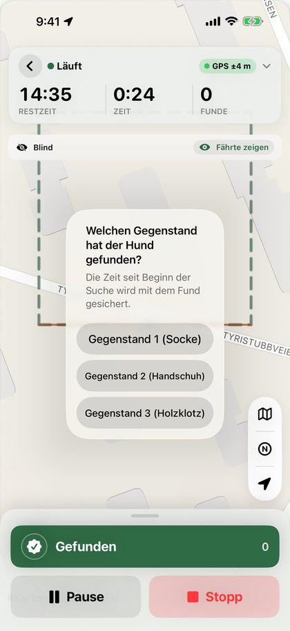
Suchen haben keine Fährtenhinweise, keine Abweichungsanalyse und keine Winkel. Auf der Karte ist die Route der Person, die die Gegenstände ausgelegt hat, dünn und blass, und bei der Gegenstandssuche wird die Route des Hundeführers nicht gezeigt.
Das Ergebnis in der Fährtenübersicht zeigt die Größe des Feldes, das Zeitlimit, die benötigte Zeit und jeden Fund mit der Zeit, die er gedauert hat, in der Reihenfolge, in der der Hund sie gefunden hat. Bei der Flächensuche werden Personen und Gegenstände getrennt gezählt. Nicht gefundene Gegenstände stehen darunter.
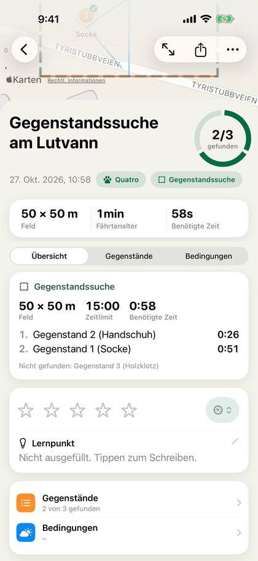
Tipp: Gegenstandssuche, Flächensuche und Fährten werden in der Statistik immer getrennt gehalten. „Alle Fährten“ auf der Seite „Fertige Fährten“ zeigt nur Fährten, und die Hundekarte für Suchen zeigt „Anzahl“ statt „Fährten“, ohne „Auf der Fährte“.
06
Gegenstände
- Stell dich dorthin, wo der Gegenstand liegt, und tippe auf „Gegenstand“. Der Gegenstand wird sofort gespeichert, mit Nummer und Position.
- Möchtest du eine Beschreibung hinzufügen, zum Beispiel „Socke“ oder „Holzklotz“, tippst du in der eingeblendeten Meldung auf „Beschreiben“.
- Aus Versehen getippt? Tippe in der Meldung auf „Widerrufen“.
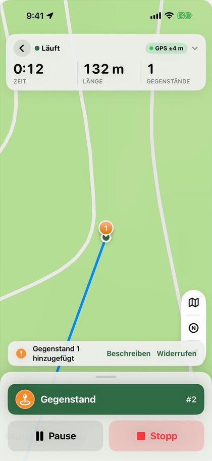
Die Gegenstände werden in der Reihenfolge nummeriert, in der du sie ablegst. Die Beschreibung kannst du auch später in der Fährtenübersicht unter „Gegenstände“ schreiben oder ändern.
Farbe und Symbol der Gegenstände wählst du unter Einstellungen › Karte und Fährten. Deine Wahl gilt für alle Karten, auch im PDF und auf dem Bild für soziale Medien.
Tipp: Hat das Handy deine Position noch nicht gefunden, wird der Gegenstand nicht gespeichert. Warte ein paar Sekunden, bis die Fährte gezeichnet wird, und versuche es noch einmal.
07
Fährte sichern
Wenn du auf „Stopp“ tippst, öffnet sich das Blatt „Fährte sichern“. Oben siehst du die Länge, die Anzahl der Gegenstände und die Zeit.
- „Fährte sichern“ steht fest unten im Blatt. Damit sicherst du die Fährte und kehrst zum Startbildschirm zurück, wo die Fährte unter „Bereite Fährten“ steht.
- Bei „Exportieren“ wählst du Trax-Datei, GPX oder PDF. Wähle „An andere Trax-Nutzer“, um die Fährte an den Hundeführer zu schicken.
- „Fährte fortsetzen“ bringt dich zurück zur Karte, falls du zu früh auf „Stopp“ getippt hast.
Du kannst der Fährte einen Namen geben. Lässt du das Feld leer, bekommt die Fährte einen Namen mit Datum und Uhrzeit.
Unter „Untergrund“ kannst du eintragen, worüber die Fährte führt, zum Beispiel Waldboden, Schotter oder Wiese. Der Hundeführer sieht den Untergrund bei der Fährte, auch wenn du sie an ein anderes Handy schickst.
Unter „Fährtenalter“ tippst du auf den Knopf für die Zeit, die die Fährte liegen soll, bevor der Hund sie arbeitet (siehe „Fährtenalter“). Bei einer Schweißfährte erscheinen außerdem die Karten „Anschuss“ und „Schweiß und Fährtenschuh“ (siehe „Fährtenart und Schweißfährten“).
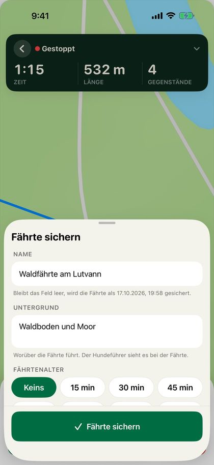
08
Fährtenalter
Das Fährtenalter ist die Zeit vom Beginn des Fährtenlegens, bis der Hundeführer beginnt, die Fährte zu arbeiten. Es zählt von selbst hoch und wird angezeigt, während die Fährte wartet und während sie gearbeitet wird. Ist die Fährte gearbeitet, wird das Fährtenalter festgeschrieben und mit der Fährte gespeichert.
Willst du Bescheid bekommen, wenn die Fährte lange genug gelegen hat, wählst du das Fährtenalter mit den Knöpfen im Blatt „Fährte sichern“: „Keins“, 15, 30, 45, 60 oder 90 Minuten, 2 Stunden oder „Eigene …“ mit Stunden und Minuten (höchstens 48 Stunden). Deine letzte Wahl wird gespeichert. Bei Schweißfährten gibt es 30 Minuten und 1, 2, 3, 6, 12, 18 und 24 Stunden, und Schweißfährten speichern ihre eigene Wahl.
Beim ersten Mal fragt das Handy, ob Trax Mitteilungen senden darf. Drei Minuten bevor das Fährtenalter erreicht ist, bekommst du die Mitteilung „Die Fährte ‚…‘ ist in 3 min bereit (Fährtenalter 30 min). Mach den Hund fertig.“ Sperrbildschirm und Dynamic Island zählen herunter und zeigen dann „Fährte ist bereit“ mit dem Fährtenalter, bis die Fährte gestartet wird. Tippe auf die Mitteilung oder den Countdown, um die Fährte zu öffnen.
Bei mehr als 8 Stunden Fährtenalter gibt es keinen Countdown auf dem Sperrbildschirm, nur die Mitteilung, bevor die Fährte bereit ist.
Bei wartenden Fährten zeigt die Fährtenübersicht das Fährtenalter groß an, mit dem Ziel und wie weit es schon ist. Tippe auf die Karte, um das Fährtenalter zu ändern oder „Keins“ zu wählen. Mitteilung und Countdown verschwinden, wenn die Fährte gestartet oder gelöscht wird.
Tipp: Die Mitteilung ist zeitkritisch und kommt auch durch Fokus-Modi wie „Schlafen“, wenn „Dringende Mitteilungen“ für Trax eingeschaltet ist. Hast du Mitteilungen für Trax ausgeschaltet, sagt dir die Karte das, mit einem Knopf zu den Einstellungen.
09
Verleitungsfährten
Eine Verleitungsfährte ist eine frischere Fährte, die die Hauptfährte kreuzt, um den Hund darin zu trainieren, auf der richtigen Fährte zu bleiben.
- Lege die Hauptfährte wie gewohnt und sichere sie.
- Öffne die Fährte unter „Bereite Fährten“ auf dem Startbildschirm und tippe in der Karte „Verleitungsfährten“ auf „Verleitungsfährte legen“.
- Die Hauptfährte erscheint blass auf der Karte. Tippe auf „Start“ und geh quer über die Hauptfährte. „Pause“ und „Stopp“ funktionieren wie beim Legen einer normalen Fährte, aber Verleitungsfährten haben keine Gegenstände.
- Tippe auf „Stopp“. Unter „Gelegt von“ kannst du eintragen, wer die Verleitungsfährte gelegt hat. Tippe dann auf „Verleitungsfährte sichern“.
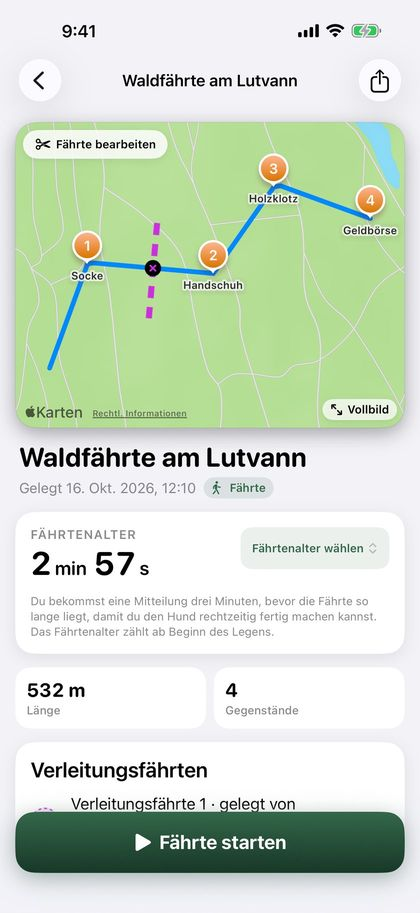
Verleitungsfährten erscheinen gestrichelt in einer eigenen Farbe, mit einem kleinen Kreuz dort, wo sie die Hauptfährte kreuzen. Die Karte zeigt die Länge und das eigene Fährtenalter der Verleitungsfährte. Du kannst mehrere Verleitungsfährten legen und eine mit dem Papierkorb löschen, bevor die Fährte gearbeitet wird.
Arbeitet der Hund die Fährte, gibt die App 12 Meter vor jeder Kreuzung den Hinweis „Kreuzende Fährte“ (siehe „Hinweise und Sprachansagen“). Verleitungsfährten erscheinen auch in der Wiedergabe, im PDF und auf dem Bild für soziale Medien und werden mitgeschickt, wenn du die Fährte verschickst. Bei einer Blindfährte sind sie verborgen, bis die Fährte gestoppt wird.
10
Fährte arbeiten
Als Hundeführer arbeitest du die Fährte mit deinem Hund. Die Route des Fährtenlegers und die Gegenstände erscheinen auf der Karte, und deine eigene Route wird in einer anderen Farbe gezeichnet.
- Tippe auf dem Startbildschirm unter „Bereite Fährten“ bei der Fährte auf „Start“. Du kannst die Fährte auch öffnen und unten auf „Fährte starten“ tippen.
- Wähle den Hund, der die Fährte arbeitet. Hast du nur einen Hund, ist er schon ausgewählt. Hast du keine Hunde angelegt, kannst du sofort starten.
- Willst du arbeiten, ohne die Fährte zu sehen, schalte „Blind arbeiten“ ein (siehe „Blindfährte“).
- Tippe auf „Start“.
- Folge deinem Hund. Nutze bei Bedarf „Pause“ und „Fortsetzen“.
- Tippe auf „Gefunden“, wenn der Hund einen Gegenstand anzeigt.
- Tippe auf „Stopp“, wenn die Fährte gearbeitet ist.
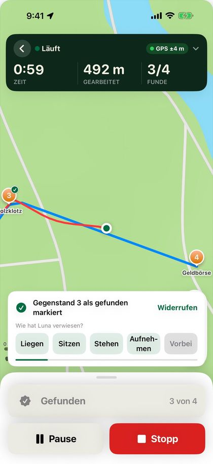
Vor dem Start zeigt das Feld oben, wie alt die Fährte ist, wie lang sie ist und wie viele Gegenstände sie hat. Während der Arbeit zeigt es die Zeit, wie weit du gegangen bist und wie viele Gegenstände gefunden wurden. Tippe auf das Feld, um das Fährtenalter zu sehen. Ist das GPS-Signal schwach, erscheint derselbe Kasten wie beim Fährtenlegen.
Wenn du auf „Start“ tippst, zoomt die Karte jedes Mal mit demselben Ausschnitt auf dich. Die Karte folgt dir beim Gehen, und wenn du hinein- oder herauszoomst, behält die Karte den Zoom, den du gewählt hast. Das Kartenmenü oben in den Kartenknöpfen hat die Standardkarte, Topo (nur in Norwegen), Satellit und Nachtmodus, und der N-Knopf wechselt zwischen Norden oben und einer Karte, die sich mit deiner Richtung dreht. Der Pfeil über den Kartenknöpfen zeigt den Wind beim Start der Fährte.
Entfernst du dich zu weit von der gelegten Fährte, vibriert das Handy, und oben erscheint die Karte „Fährte verloren“ mit deinem Abstand. Die Karte verschwindet, wenn du wieder auf der Fährte bist oder auf das Kreuz tippst. Mehr dazu und zu den anderen Hinweisen findest du unter „Hinweise und Sprachansagen“.
Die Aufzeichnung läuft weiter, wenn der Bildschirm gesperrt ist oder du die App wechselst. Die Fährte erscheint auf dem Sperrbildschirm und in der Dynamic Island, und auf dem Sperrbildschirm kannst du auf „Pause“, „Fortsetzen“ und „Gefunden“ tippen.
Tippst du nach dem Start auf den Zurückpfeil, fragt die App „Hundefährte beenden?“. Du kannst stoppen und sichern, die Fährte pausieren oder „Hundefährte verwerfen“ wählen. Eine pausierte Fährte setzt du fort, indem du die Fährte wieder öffnest. „Hundefährte verwerfen“ löscht nur das, was du gearbeitet hast. Die gelegte Fährte bleibt unter „Bereite Fährten“.
Stoppt die App mitten in einer Fährte, zum Beispiel weil der Akku leer war, ist die Fährte unterwegs gespeichert worden. Sie steht unter „Bereite Fährten“ mit „Fährte läuft“. Öffne die Fährte und tippe auf „Fortsetzen“, dann geht die Fährte aus der Pause weiter. Die Zeit, in der die App gestoppt war, zählt nicht zur benötigten Zeit.
11
Blindfährte
Arbeite die Fährte, ohne zu sehen, wo der Fährtenleger gegangen ist, so wie bei einer Prüfung.
Schalte „Blind arbeiten“ ein, bevor du auf „Start“ tippst. Der Schalter ist immer aus, wenn du die Fährte öffnest, du musst ihn also jedes Mal einschalten.
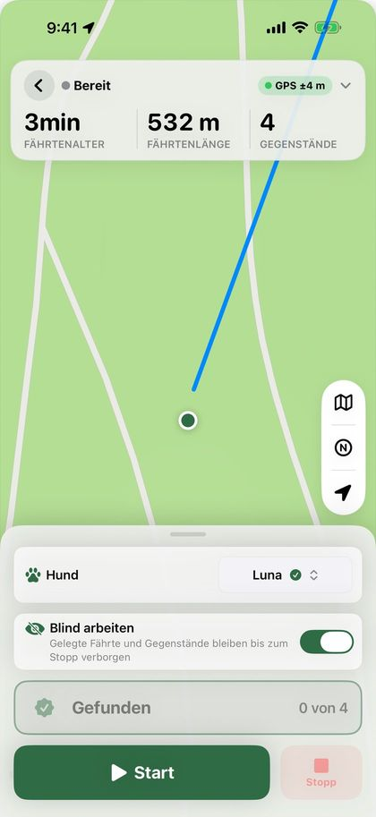
- Die gelegte Fährte, die Gegenstände, Schweißpausen, Verleitungsfährten und Winkel sind auf der Karte verborgen, bis du auf „Stopp“ tippst. Anschuss und Fluchtrichtung einer Schweißfährte werden trotzdem gezeigt.
- Du bekommst unterwegs keine Hinweise, weder zu Gegenständen, Schweißpausen, verlorener Fährte noch zu kreuzenden Fährten, und Gegenstände werden nicht angesagt.
- Das Feld oben zeigt nur, wie viele Gegenstände gefunden wurden, nicht wie viele es gibt.
- „Gefunden“ erfasst den nächstgelegenen Gegenstand, egal wie weit entfernt er ist.
Musst du die Fährte sehen, zum Beispiel weil ihr euch verlaufen habt, tippst du auf „Fährte zeigen“. Dann wird alles gezeigt, und die Fährte zählt nicht mehr als blind.
Die Fährtenübersicht und das PDF zeigen „Blind gearbeitet“ und, falls du auf „Fährte zeigen“ getippt hast, wann die Fährte gezeigt wurde.
12
Nachtmodus
Trainierst du im Dunkeln, macht der Nachtmodus den Bildschirm dunkel und rot, damit deine Nachtsicht erhalten bleibt.
- Tippe auf den obersten Kartenknopf rechts auf der Karte, während du eine Fährte legst oder arbeitest.
- Schalte im Menü „Nachtmodus“ ein.
- Ausschalten geht auf die gleiche Weise.
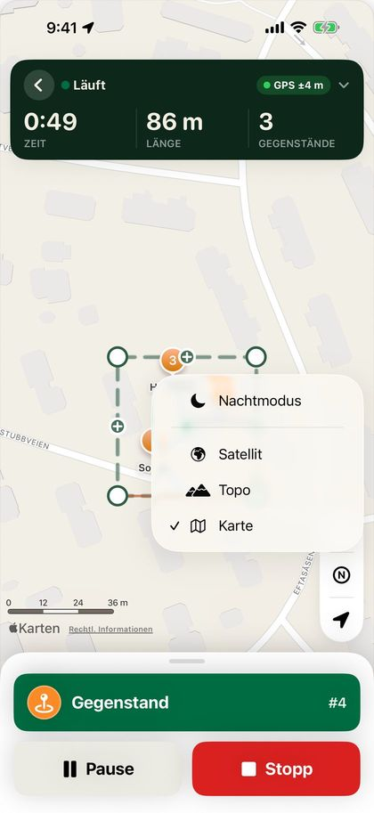
Der Nachtmodus macht den ganzen Bildschirm rot und dunkel: die Karte, das Feld oben und die Knöpfe. Deine Wahl wird bis zum nächsten Mal gespeichert, wenn du eine Fährte legst oder arbeitest. Der Rest der App sieht aus wie gewohnt.
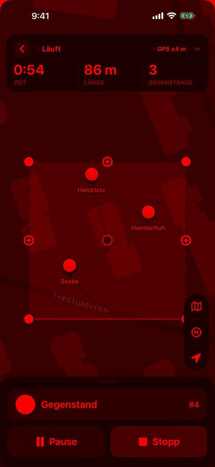
Tipp: Dreh zusätzlich die Bildschirmhelligkeit herunter. Der Nachtmodus ändert die Farben, nicht wie hell der Bildschirm leuchtet.
13
Funde erfassen
Kommst du in den gewählten Abstand zu einem Gegenstand (standardmäßig 12 Meter), erscheint ein Banner mit Nummer, Beschreibung und Abstand. Das Handy vibriert, auch bei gesperrtem Bildschirm. Ist das GPS ungenau, wartet die App mit dem Hinweis, bis die Position besser ist. Abstand und Hinweisart wählst du unter Einstellungen › Hinweise (siehe „Hinweise und Sprachansagen“).
- Tippe im Banner auf „Als gefunden markieren“ oder unten auf den großen Knopf „Gefunden“. Wähle „Später“, wenn du warten willst.
- Tippst du nichts an, schließt sich das Banner von selbst, wenn du ein Stück am Gegenstand vorbei bist (25 Meter oder der doppelte gewählte Abstand, falls das mehr ist), oder wenn du dich dem nächsten Gegenstand näherst. Der Gegenstand wird dann nicht als gefunden erfasst, aber du kannst ihn beim Stoppen abhaken.
- „Gefunden“ lässt sich nur antippen, wenn du innerhalb des gewählten Abstands zu einem noch nicht gefundenen Gegenstand bist, in der App wie auf dem Sperrbildschirm. Ist kein Banner zu sehen, wird der nächstgelegene erfasst.
- Aus Versehen getippt? Tippe in der Meldung, die unten erscheint, auf „Widerrufen“.
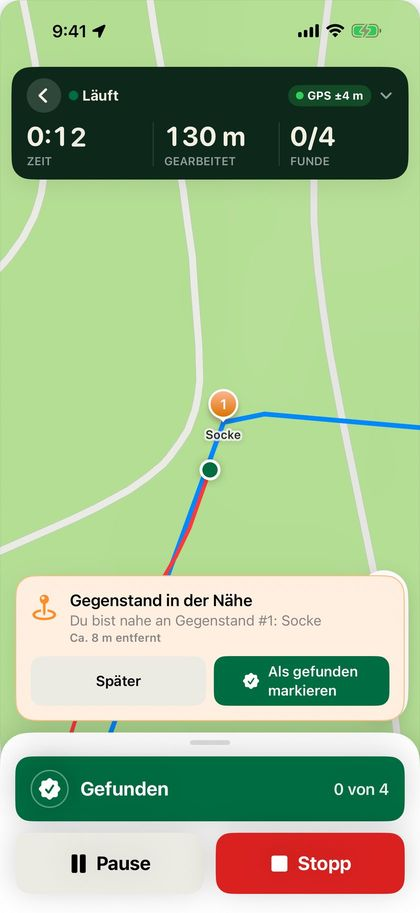
Wenn du stoppst, zeigt das Blatt „Fährte abgeschlossen“ eine Liste der Gegenstände. Funde, die du unterwegs erfasst hast, sind schon abgehakt. Korrigiere, falls etwas fehlt.
Im selben Blatt kannst du der Fährte eine Bewertung geben (siehe „Bewertung und Winkel“) und Notizen schreiben, zum Beispiel zu den Bedingungen oder dazu, wie der Hund gearbeitet hat. Die Notizen kommen ins PDF. Hat der Fährtenleger den Untergrund leer gelassen, kannst du ihn hier eintragen. Tippe auf „Sichern“, wenn du fertig bist.
„Exportieren“ im selben Blatt teilt die Fährte sofort als Trax-Datei, GPX oder PDF. Willst du die Fährte zeigen, tippe auf „In sozialen Medien teilen“ (siehe „In sozialen Medien teilen“).
Tipp: Willst du die Fährte ohne Hinweise und ohne sie zu sehen arbeiten, schalte vor dem Start „Blind arbeiten“ ein (siehe „Blindfährte“).
14
Hinweise und Sprachansagen
Während der Hund die Fährte arbeitet, kann dich das Handy mit Vibration, Ton und Sprache hinweisen. Alle Hinweise stellst du unter Einstellungen › Hinweise ein.
- „Gegenstand in der Nähe“: wenn du innerhalb von „Abstand zum Gegenstand“ bist (5–50 Meter, standardmäßig 12 Meter). Bei einer Schweißfährte gilt das für Wundbett und Stück.
- „Schweißpause“ und „Schweiß wieder“ (Schweißfährten): bevor du eine Schweißpause erreichst und bevor der Schweiß danach wieder beginnt. Den Abstand wählst du unter „Abstand zur Schweißpause“ (standardmäßig 20 Meter).
- „Fährte verloren“: wenn du eine Weile weiter von der gelegten Fährte entfernt warst als „Abstand von der Fährte“ (5–30 Meter, standardmäßig 15 Meter). Die App gibt erst einen Hinweis, wenn du einmal auf der Fährte warst.
- „Kreuzende Fährte“: 12 Meter vor jeder Stelle, an der eine Verleitungsfährte die Fährte kreuzt. Kreuzungen, die dicht beieinander liegen, ergeben einen Hinweis.
Alle sind standardmäßig eingeschaltet. Der Hauptschalter „Hinweise“ oben schaltet alle Hinweise ein und aus, auch die Sprachansagen. Hinweise erscheinen auch auf dem Sperrbildschirm. Bei einer Blindfährte gibt es keine Hinweise. Änderungen bei Schweißpause, verlorener Fährte und kreuzender Fährte gelten ab dem nächsten Start einer Fährte.
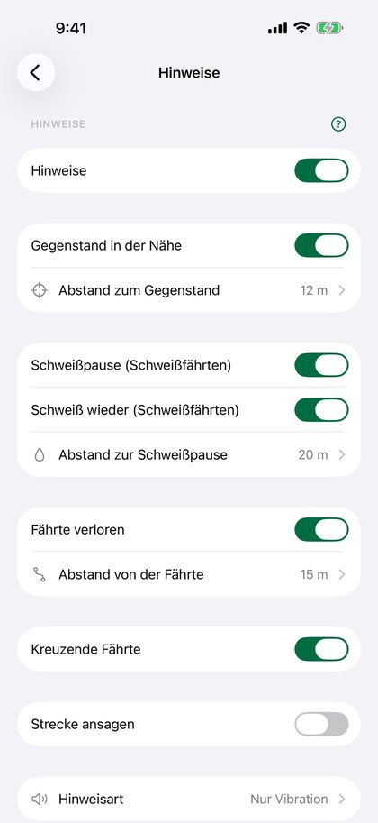
Unter „Hinweisart“ wählst du „Nur Vibration“ oder „Vibration und Ton“. Der Ton ist nur zu hören, wenn das Handy nicht stumm geschaltet ist und nicht auf „Nicht stören“ steht.
Sprachansagen: Schalte unter „Hinweisart“ „Hinweise vorlesen“ ein. Dann sagt das Handy alle Hinweise an, die du eingeschaltet hast, zum Beispiel „Gegenstand 3, etwa 11 Meter entfernt“, „Schweißpause in 20 Metern“ oder „Fährte verloren, etwa 18 Meter von der Fährte“. Tippe auf „Beispiel anhören“, um die Stimme zu hören. Sprachansagen sind in AirPods oder im Lautsprecher zu hören, auch bei gesperrtem Bildschirm und wenn das Handy stumm geschaltet ist. Musik wird leiser, während die Ansage läuft.
Schaltest du unter Hinweise „Strecke ansagen“ ein, sagt das Handy auch an, wie weit du gegangen bist, zum Beispiel „300 Meter gearbeitet“. Unter „Wie oft“ wählst du alle 100, 200 oder 500 Meter oder jeden Kilometer. Das gilt nur, wenn „Hinweise vorlesen“ eingeschaltet ist.
Tipp: Mit AirPods im Ohr hörst du die Sprachansagen, ohne das Handy herauszunehmen, und der Hund wird nicht durch Ton aus dem Lautsprecher gestört.
15
Fährtenübersicht
Tippe auf dem Startbildschirm auf eine Fährte, um alles über sie zu sehen.
- Die Karte oben zeigt beide Routen und alle Gegenstände. Tippe auf „Vollbild“ für eine größere Karte. Dort wechselt die Kartentaste unten rechts zwischen Standardkarte, Topo und Satellit. Der Vollbildmodus öffnet immer mit der Standardkarte.
- „Optionen“ oben links auf der Karte enthält „Fährte abspielen“ und „Fährte bearbeiten“. Bei einer Fährte, die noch nicht gearbeitet wurde, steht „Fährte bearbeiten“ dort direkt.
- Die Ergebniskarte unter dem Titel zeigt die Funde in einem Ring (zum Beispiel „4/4 gefunden“), die Länge, das Fährtenalter, die benötigte Zeit und wie viel deiner Route auf der Fährte lag. Bei einer Suche zeigt die Karte statt der Länge die Größe des Felds, und eine eigene Karte zeigt die Zeit bis zu jedem Fund (siehe „Suche: Gegenstandssuche und Flächensuche“).
- Mit dem falschen Hund gearbeitet oder vergessen, einen Hund zu wählen? Tippe in der Zeile für den Hund auf „Hund wechseln“ oder „Hund wählen“ und wähle einen anderen Hund oder „Kein Hund“. Hast du keine Hunde angelegt, steht dort „Hund hinzufügen“.
- Auf der Karte bekommen gefundene Gegenstände einen kleinen grünen Haken in der Ecke und behalten ihre Farbe und ihr Symbol, sodass du siehst, ob es ein Wundbett oder das Stück war. Nicht gefundene Gegenstände sind grau. Die Route des Hundeführers ist danach eingefärbt, wie weit sie von der Fährte abwich (siehe „Abweichung von der Fährte“), und kleine nummerierte Kreise zeigen die Winkel in der Fährte (siehe „Bewertung und Winkel“).
- „Bewertung“ unter dem Ergebnis zeigt Bewertung, Schwierigkeitsgrad und Lernpunkt.
- „Abweichung von der Fährte“ zeigt, wie genau du und dein Hund der Fährte gefolgt seid.
- Bei wartenden Fährten zeigt die Karte das Fährtenalter groß an, mit dem Ziel und wie weit es schon ist, und „Fährte starten“ bleibt unten auf dem Bildschirm stehen. Hier findest du auch die Karte „Verleitungsfährten“ (siehe „Fährtenalter“ und „Verleitungsfährten“).
- Unter „Gegenstände“ siehst du jeden Gegenstand mit Beschreibung und Ergebnis. Tippe auf einen Gegenstand, um die Beschreibung zu schreiben oder zu ändern. Bei einer Schweißfährte heißt die Karte „Wundbetten, Stück und Schweißpausen“.
- „Fährtenart“, Untergrund und Notiz stehen weiter unten. Tippe darauf, um sie zu ändern.
- Die Teilen-Taste oben exportiert die Fährte als Trax-Datei, GPX oder PDF und erstellt bei abgeschlossenen Fährten das Bild für soziale Medien.
- „Details“ zeigt „Legen gestartet“, „Legen beendet“, „Fährtenarbeit gestartet“ und „Fährtenarbeit beendet“, die Anzahl der Winkel und ob die Fährte blind gearbeitet wurde. Tippe auf „Umbenennen“, um der Fährte einen neuen Namen zu geben.
- „Fährte löschen“ ganz unten löscht die Fährte, nachdem du bestätigt hast.
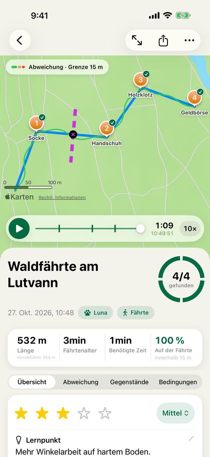
16
Bewertung und Winkel
Gib jeder Fährte eine Bewertung und sieh, wie viele Winkel die Fährte hatte.
Die Karte „Bewertung“ findest du im Fenster „Fährte abgeschlossen“ und unter dem Ergebnis in der Fährtenübersicht. Alles ist freiwillig:
- „Bewertung“: 1 bis 5 Sterne.
- „Schwierigkeitsgrad“: „Leicht“, „Mittel“ oder „Schwer“.
- „Lernpunkt“: eine Zeile dazu, was gut lief oder woran noch gearbeitet werden muss.
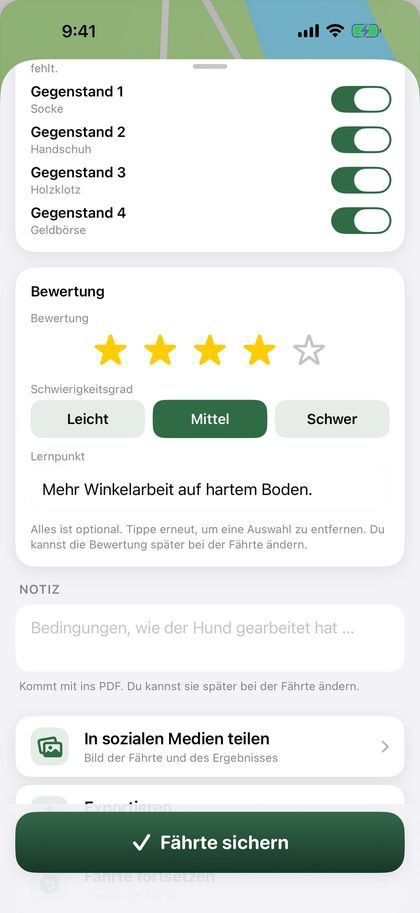
Tippe noch einmal auf den gewählten Stern oder Grad, um die Auswahl zu entfernen. In der Fährtenübersicht tippst du auf die Sterne oder den Grad, um sie zu ändern, und auf den Lernpunkt, um ihn zu schreiben.
Das Entwicklungsdiagramm des Hundes hat die Option „Bewertung“, mit den Punkten nach Schwierigkeitsgrad eingefärbt: Grün ist leicht, Orange mittel und Rot schwer. Das PDF zeigt Bewertung und Schwierigkeitsgrad und den Lernpunkt als eigenen Abschnitt. Der Hundebericht hat die Durchschnittsbewertung auf dem Deckblatt. Die Bewertung ist dabei, wenn du die Fährte als Trax-Datei sendest.
Winkel: Trax zählt die Winkel in der gelegten Fährte selbst, dort, wo die Fährte um mindestens 45 Grad abbiegt. Kleine Bögen und GPS-Rauschen werden nicht gezählt. „Details“ in der Fährtenübersicht zeigt „Winkel“, und die Karte hat an jedem Winkel kleine nummerierte Kreise. Das PDF hat die Zeile „Winkel in der Fährte“. Fährten unter 30 Metern bekommen keine Winkel, und bei einer Blindfährte sind sie verborgen, bis die Fährte gestoppt wird.
17
Fährte abspielen
Sieh dir an, wie der Hund gearbeitet hat, über der Fährte, die der Fährtenleger gelegt hat.
- Öffne eine abgeschlossene Fährte, tippe oben links auf der Karte auf „Optionen“ und wähle „Fährte abspielen“.
- Tippe auf die Wiedergabetaste. Eine Pfote zeigt, wo der Hund war, und die Route wird nach und nach gezeichnet.
- Ziehe an der Zeitleiste, um vor- oder zurückzuspringen. Unter der Zeitleiste siehst du, wie weit du in der Fährte bist, und die Uhrzeit.
- Tippe auf die Geschwindigkeitstaste, um 5-, 10-, 30- oder 60-mal schneller als in Echtzeit abzuspielen.
Gegenstände bekommen einen grünen Haken, wenn sie gefunden werden. Bei älteren Fährten, bei denen der Zeitpunkt des Fundes nicht gespeichert wurde, gilt der Gegenstand dort als gefunden, wo der Hund ihm am nächsten kam.
18
Kommt mit v2.1Fährte des Hundes vom GPS-Halsband
Trägt dein Hund ein GPS-Halsband, zum Beispiel von Garmin oder Tractive? Füge die GPX-Datei vom Halsband hinzu, dann siehst du, wo der Hund im Vergleich zu dir und zur Fährte gelaufen ist.
- Exportiere die Runde als GPX-Datei vom Halsband oder aus der App des Halsbands und sichere sie in Dateien oder schicke sie per AirDrop an das iPhone.
- Öffne die abgeschlossene Fährte und tippe in der Karte „Fährte des Hundes“ auf „Fährte des Hundes hinzufügen“. Wähle die GPX-Datei.
- Enthält die Datei mehrere Hunde, wählst du, wer die Fährte gearbeitet hat. Der Hund mit demselben Namen wie auf der Fährte steht oben.
Du kannst die GPX-Datei auch direkt aus Dateien oder per AirDrop öffnen. Passen die Zeiten in der Datei zu einer Fährte, die du gearbeitet hast, fragt Trax „Ist das die Fährte des Hundes?“. Tippe auf „Fährte des Hundes hinzufügen“ oder auf „Als neue Fährte importieren“, wenn die Datei eine normale Fährte ist.
Trax verwendet nur den Teil der Datei aus der Zeit, in der du die Fährte gearbeitet hast, mit zwei zusätzlichen Minuten an jedem Ende. Der Rest der Runde wird nicht übernommen. Die Datei muss zur selben Fährte gehören: Passen die Zeiten nicht, bekommst du einen Hinweis.
Die Karte „Fährte des Hundes“ zeigt die Länge der Fährte des Hundes und den weitesten Abstand des Hundes zu dir. Mit „Auf der Karte zeigen“ blendest du die Linie des Hundes aus oder ein. „Ersetzen“ wählt eine neue Datei, und „Entfernen“ löscht die Fährte des Hundes, ohne den Rest der Fährte zu verändern.
Bei „Fährte abspielen“ erscheint der Hund als Pfote und du als eigener Punkt, und unter der Zeitleiste steht, wie weit der Hund in dem Moment von dir entfernt war. Die Fährte des Hundes ist auch auf der Karte im PDF zu sehen und wird mitgeschickt, wenn du die Fährte an einen anderen Trax-Nutzer sendest.
Tipp: Hat die Datei keine Zeiten, wird die Fährte des Hundes auf der Karte gezeigt, aber nicht in der Wiedergabe.
19
Fährte bearbeiten
Schneide den Anfang oder das Ende einer Fährte ab, zum Beispiel ein langes Endstück, weil du vergessen hast, auf Stopp zu tippen.
- Öffne die Fährte, tippe oben links auf der Karte auf „Optionen“ und dann auf „Fährte bearbeiten“. Bei einer Fährte, die noch nicht gearbeitet wurde, steht „Fährte bearbeiten“ dort direkt.
- Enthält die Fährte sowohl die Route des Fährtenlegers als auch die des Hundeführers, wählst du oben, welche du kürzen willst. Du kannst beide kürzen, bevor du sicherst.
- Ziehe die Griffe unter der Karte: Der linke ist der neue Anfang, der rechte das neue Ende. Was abgeschnitten wird, wird auf der Karte grau. Mit den Pfeilen verschiebst du jeweils um einen Punkt.
- Tippe auf „Sichern“. Länge, Dauer und Fährtenalter werden neu berechnet, und die Abweichung von der Fährte wird angepasst.
Liegen Gegenstände oder Funde im abgeschnittenen Teil, fragt die App, ob sie zum nächsten Punkt verschoben oder entfernt werden sollen. Ein entfernter Fund zählt als nicht gefunden.
Wichtig: Das Kürzen kann nach dem Sichern nicht rückgängig gemacht werden. Die abgeschnittenen Punkte werden gelöscht.
20
Abweichung von der Fährte
Sieh, wie genau du und dein Hund der Fährte gefolgt seid, die der Fährtenleger gelegt hat.
Die Karte „Abweichung von der Fährte“ steht bei abgeschlossenen Fährten unter dem Ergebnis in der Fährtenübersicht. Sie zeigt:
- Wie viel deiner Route innerhalb der Grenze für „auf der Fährte“ lag.
- „Fährte verloren“: wie oft der Hundeführer mindestens 20 Meter am Stück außerhalb der Grenze war (oder die doppelte Grenze, wenn das länger ist), und wie weit in der Fährte das zum ersten Mal passierte.
- Durchschnittliche und größte Abweichung.
Die Grenze wählst du mit der Taste oben rechts in der Karte: 5, 10, 15, 20 oder 30 Meter. Standard sind 15 Meter. Deine Wahl wird gespeichert und gilt auch für das PDF und für „Auf der Fährte“ in der Hundeübersicht. Der Hinweis „Fährte verloren“ während der Arbeit hat eine eigene Grenze unter Einstellungen › Hinweise.
Auf der Karte, im Vollbildmodus und bei der Wiedergabe ist die Route des Hundeführers eingefärbt: Grün innerhalb der Grenze, Orange bis zur doppelten Grenze und Rot weiter weg. Während du die Fährte arbeitest, wird weiterhin die Farbe verwendet, die du unter Einstellungen › Karte und Fährten gewählt hast.
Tipp: Die Abweichung wird anhand der GPS-Aufzeichnung des Hundeführers gemessen, nicht der des Hundes. GPS liegt oft ein paar Meter daneben, kleine Abweichungen spielen also kaum eine Rolle.
21
Wetter
Trax ruft das Wetter an dem Ort ab, an dem die Fährte begann, für den Zeitpunkt, an dem du gestartet bist: Temperatur, Wind und Windrichtung, Niederschlag und Luftfeuchtigkeit. Wenn der Hund die Fährte startet, wird das Wetter erneut abgerufen, da der Wind während des Fährtenalters gedreht oder zugenommen haben kann. Die Wetterdaten werden mit der Fährte gespeichert und sind im PDF-Export enthalten, in den Spalten „Gelegt“ und „Gearbeitet“.
Während die Fährte gelegt wird und während der Hund arbeitet, zeigt ein kleiner Pfeil auf der Karte über den Kartentasten, wohin der Wind weht und wie stark in m/s. Der Pfeil zeigt dorthin, wohin der Wind weht, also wohin die Witterung zieht, und dreht sich mit der Karte. Tippe auf den Pfeil, um zum Beispiel „Wind aus SW, 4 m/s“ zu sehen. Der Wind wird einmal beim Start abgerufen und unterwegs nicht aktualisiert. Der Pfeil ist auch auf der Karte im PDF und auf dem Bild für soziale Medien zu sehen.
Fehlen einer Fährte die Wetterdaten, zum Beispiel weil du keinen Empfang hattest, tippe in der Fährtenübersicht auf „Wetter abrufen“. Dafür ist eine Internetverbindung nötig.
Die Wetterdaten stammen von Apple Wetter. Unter der Wetterkarte findest du das Apple Wetter-Logo und einen Link zu Apples Übersicht über weitere Datenquellen.
22
In sozialen Medien teilen
Zeig deine Fährte: Trax erstellt ein Bild mit der Fährte, der Länge, dem Fährtenalter und den Funden, gern über einem Foto von dir und deinem Hund.
- Wenn du eine Fährte gearbeitet hast, tippe im Fenster „Fährte sichern“ auf „In sozialen Medien teilen“. Ältere Fährten teilst du über die Teilen-Taste oben in der Fährtenübersicht.
- Wähle oben das Aussehen. „Fährte und Zahlen“, „Nur Fährte“, „Liste“ und „Nur Zahlen“ zeigen die Fährte und die Zahlen in Weiß, wie bei Strava. „Satellit“ zeigt die Satellitenkarte mit einer weißen Karte.
- Wähle „Story (9:16)“ oder „Beitrag (4:5)“.
- Tippe auf „Foto aufnehmen“ oder „Foto auswählen“, um die Fährte über ein Foto von dir und deinem Hund zu legen. Ohne eigenes Foto ist der Hintergrund grün. „Foto entfernen“ nimmt es wieder weg.
- Wähle die Farbe für „Fährtenleger“, „Hundeführer“ und „Gegenstände“: Weiß, Grün oder Orange.
- Tippe auf „Bild teilen“ und wähle Instagram, Facebook, Snapchat oder eine andere App, oder „Bild sichern“, um es in Fotos zu speichern.
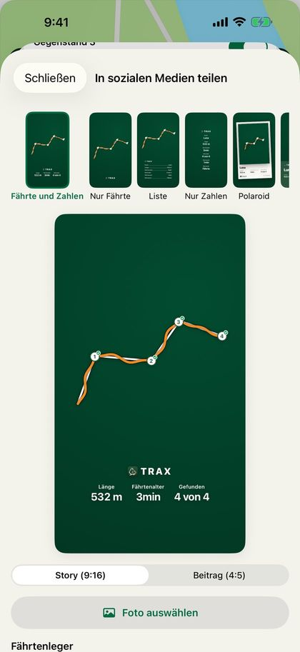
Bei der Gegenstandssuche und der Flächensuche zeigt das Bild den Feldrand und die Gegenstände ohne Fährte, und „Größe“ statt „Länge“. Die Sticker haben dann eine Farboption, „Feld“.
Hast du ein eigenes Foto verwendet, fragt Trax am Ende „Bild mit der Fährte sichern?“. Wählst du „Sichern“, wird das Bild oben in der Fährtenübersicht angezeigt, und du wischst zwischen Bild und Karte. Tippe auf das Bild, um es in voller Größe zu sehen. Unter „Bild“ kannst du das Bild erneut teilen oder von der Fährte entfernen. Das Bild ist im Backup enthalten.
Tipp: In einer Instagram-Story kannst du die Fährte als Sticker verwenden: Tippe auf „Sticker kopieren“, öffne eine Instagram-Story, wähle ein Foto und füge ein. Den Sticker kannst du verschieben und größer oder kleiner machen.
Wichtig: Beim Teilen wird die Fährte nicht gesichert. Denk daran, danach auf „Fährte sichern“ zu tippen.
23
Fährten teilen und empfangen
Fährtenleger und Hundeführer müssen nicht dasselbe iPhone verwenden. Der Fährtenleger sendet die Fährte als Trax-Datei.
- Wenn die Fährte gelegt ist, tippt der Fährtenleger auf „Exportieren“ › „An andere Trax-Nutzer“ oder auf die Teilen-Taste oben in der Fährtenübersicht.
- Sende die Datei per AirDrop oder E-Mail. AirDrop funktioniert am besten, denn dann öffnet sich die Fährte beim Empfänger direkt in Trax.
- Aus einer E-Mail oder aus Dateien tippt der Empfänger auf die Datei. Eine Vorschau zeigt Karte, Länge, Anzahl der Gegenstände und Untergrund. Tippe auf die Teilen-Taste und wähle Trax.
- Trax zeigt „Fährte empfangen“ mit Länge und Anzahl der Gegenstände. Wähle „Fährte jetzt arbeiten“ oder „Für später sichern“. „Abbrechen“ schließt, ohne zu importieren.
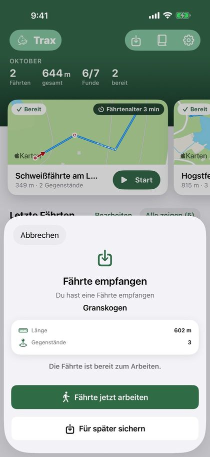
Wichtig: Sende die Fährte nicht mit Nachrichten. Geht die Nachricht als SMS statt als iMessage raus, kommt die Datei nicht an, und es ist schwer, vorher zu erkennen, was passiert.
Die Datei enthält die Route des Fährtenlegers, die Gegenstände mit Beschreibung, den Untergrund, die Fährtenart, die Verleitungsfährten und alles, was zu einer Schweißfährte gehört. Wurde die Fährte schon gearbeitet, sind auch die Route des Hundes und die Bewertung dabei, und der Empfänger bekommt nur die Option „Sichern“. Die Fährte landet dann unter „Fertige Fährten“.
Du kannst auch auf dem Startbildschirm auf „Importieren“ tippen und eine Datei aus der App „Dateien“ wählen. GPX-Dateien aus anderen Apps und von GPS-Geräten funktionieren auch. Wähle „GPX (andere Apps)“, wenn du die Fährte in einer anderen Karten-App öffnen willst.
Hat der Fährtenleger kein iPhone? Dann kann die Fährte in jeder GPS-App gelegt werden, die GPX-Dateien speichert. Der Fährtenleger speichert an jedem ausgelegten Gegenstand einen Wegpunkt, exportiert die Fährte als GPX und sendet die Datei per E-Mail. Du tippst auf die Datei und wählst Trax, genau wie bei einer Trax-Datei.
Die Wegpunkte werden zu Gegenständen, mit dem Namen als Beschreibung, und du bekommst einen Hinweis, wenn der Hund sich ihnen nähert. Gegenstände können in Trax nicht nachträglich hinzugefügt werden. Hat die Datei keine Wegpunkte, kommt die Fährte also ohne Gegenstände an. Sende eine Fährte pro Datei. Enthält die Datei zwei Fährten, liest Trax die zweite als Route des Hundes.
Die Fährte bekommt die Markierung „Exportiert“ erst, wenn das Teilen abgeschlossen ist, egal ob du eine Trax-Datei, GPX oder PDF teilst. Brichst du das Teilen-Menü ab, wird sie nicht markiert.
Tipp: Ihr wollt ein gemeinsames Archiv für eure Trainingsgruppe? Erstelle in der App „Dateien“ einen Ordner in iCloud Drive und teile ihn mit der Gruppe. Wähle „In Dateien sichern“, wenn du eine Fährte exportierst, und lege die Trax-Datei in den geteilten Ordner. Die anderen tippen auf die Datei im Ordner und öffnen sie in Trax, genau wie aus einer E-Mail.
24
PDF-Bericht
Tippe in der Fährtenübersicht oben auf die Teilen-Taste, wähle „PDF (mehrere)“ und wähle eine oder mehrere abgeschlossene Fährten aus. Du bekommst ein PDF mit einer Fährte pro Seite, die älteste zuerst, mit Karte, Kennzahlen, Gegenständen, Funden, Untergrund, Notiz, Bewertung und Wetter, fertig zum Senden oder Drucken.
Die Kennzahlen enthalten auch Fährtenart, Winkel, „Innerhalb X m der Fährte“ und „Fährte verloren“, und die Route des Hundeführers ist auf der Karte nach Abweichung eingefärbt, mit der Grenze, die du in der Fährtenübersicht gewählt hast (siehe „Abweichung von der Fährte“). Schweißfährten enthalten auch die Schweißmenge, Fährtenschuh/Schalen und die Schweißpausen. Jeder Gegenstand steht mit seiner Koordinate in dem Format, das du unter Einstellungen › Karte und Fährten gewählt hast, und wie genau das GPS war, als der Gegenstand ausgelegt wurde, zum Beispiel „±4 m Genauigkeit“. Ältere Fährten haben die Genauigkeit nicht gespeichert, dann steht dort „Genauigkeit unbekannt“.
Für alle Fährten eines Hundes tippst du auf dem Startbildschirm neben „Letzte Fährten“ auf „Alle“ und dann oben rechts auf die Dokumenttaste. Wähle den Hund und schalte „Zeitraum wählen“ ein, wenn du nur die Fährten zwischen zwei Daten willst. Das PDF bekommt ein Deckblatt mit Zusammenfassung, Durchschnittsbewertung und einer Liste der Fährten, danach eine Seite pro Fährte. Die Fährten im Bericht bekommen die Markierung „Exportiert“.
Tipp: Der PDF-Bericht eignet sich gut als Trainingstagebuch oder um ihn deinem Ausbilder zu zeigen.
25
Hunde
Lege die Hunde an, mit denen du trainierst, dann siehst du, welcher Hund welche Fährte gearbeitet hat.
- Gehe zu Einstellungen › Meine Hunde.
- Tippe auf „Hund hinzufügen“ und gib den Namen ein.
- Tippe auf „Sichern“.
Wenn du Hunde angelegt hast, wählst du den Hund, wenn du mit dem Arbeiten einer Fährte beginnst, nicht beim Legen. Hast du nur einen Hund, ist er schon ausgewählt. Der Hund wird in der Fährtenübersicht und im PDF-Bericht angezeigt.
Du kannst den Hund nachträglich in der Fährtenübersicht ändern. Auf der Seite „Fertige Fährten“ (tippe auf dem Startbildschirm auf „Alle“) kannst du mit den Tasten oben die Fährten jeweils eines Hundes anzeigen.
Wählst du einen Hund, zeigt die Karte vier Zahlen: „Fährten“, „Gefunden“, „Letzte 30 Tage“ und „Auf der Fährte“ (der Durchschnitt, wie viel jeder Fährte innerhalb der Grenze für die Abweichung lag). Darunter steht „Entwicklung“: ein Diagramm der abgeschlossenen Fährten des Hundes über die Zeit. Wähle, was das Diagramm zeigen soll: „Alter“, „Länge“, „Funde“, „Auf Fährte“, „Sterne“ oder „Schweiß“ (Schweißmenge pro 100 Meter, wenn der Hund mindestens zwei Schweißfährten mit Schweißmenge hat). Das Diagramm erscheint, sobald der Hund mindestens zwei Fährten hat. Fehlt den Fährten der gewählte Wert, steht dort, dass es zu wenige Fährten für ein Diagramm gibt.
Wählst du beim Hund „Gegenstandssuche“ oder „Flächensuche“, zeigt die Karte „Anzahl“ statt „Fährten“ und nicht „Auf der Fährte“. Das Diagramm für Suchen erscheint, sobald der Hund mindestens zwei Suchen hat. Suchen werden nie in der Statistik für Fährten mitgezählt.
Löschst du einen Hund, behalten seine Fährten den Hundenamen. Der Hund steht unter Einstellungen › Meine Hunde › „Frühere Hunde“, solange er Fährten hat, und dort kannst du den Schalter ausschalten, um ihn im Hundefilter auszublenden. Die Fährten stehen weiterhin unter „Alle“.
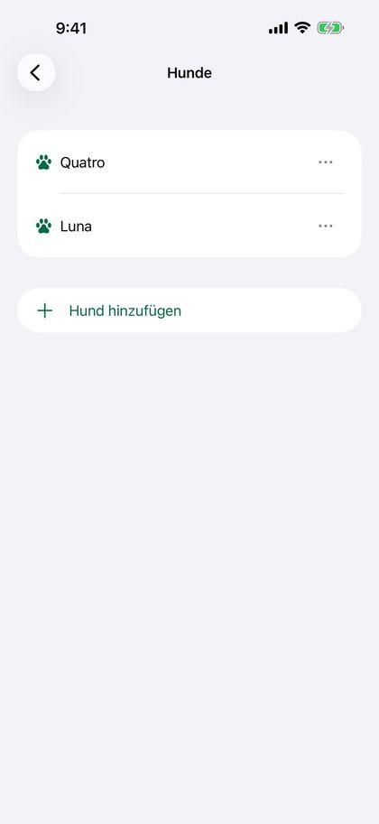
26
Einstellungen
Ganz oben in den Einstellungen steht „Meine Hunde“, darunter eine Zeile für jede Seite: Hinweise, Karte und Fährten, Batterie, Backup und Über Trax. Tippe auf eine Zeile, um die Seite zu öffnen.
- Hinweise: Hinweise für Gegenstände in der Nähe, Schweißpause und Schweiß wieder, verlorene und kreuzende Fährten, Ansage der gearbeiteten Strecke sowie die Hinweisart mit Sprachansagen. Siehe „Hinweise und Sprachansagen“.
- Karte und Fährten: Wähle Farbe und Symbol der Gegenstandsmarkierungen (Zahl, Stecknadel, Fahne, Pfote oder Beutel), „Farbe Fährtenleger“ und „Farbe Hundeführer“. „Karte nach Blickrichtung drehen“ dreht die Karte in die Richtung, in die du beim Legen oder Arbeiten einer Fährte schaust; ist es aus, ist Norden immer oben. Hier wählst du auch das Koordinatenformat: Dezimalgrad (DD), UTM, Grad/Minuten/Sekunden (DMS) oder MGRS.
- Batterie: „GPS-Stromsparmodus“ verbraucht auf langen Fährten weniger Strom. Die Fährte wird etwas gröber, aber der Näherungshinweis und „Gefunden“ funktionieren wie bisher. Während der Aufzeichnung wird oben der Akkustand angezeigt, und die App warnt bei 20 und 10 Prozent, auch bei gesperrtem Bildschirm.
- Backup: automatische Kopie in iCloud Drive und Backups, die du selbst erstellst. Siehe „Backup und neues iPhone“.
- Meine Hunde: Hunde hinzufügen, umbenennen oder löschen. Unter „Frühere Hunde“ kannst du gelöschte Hunde im Hundefilter ausblenden.
- Über Trax: „Feedback senden“ öffnet eine E-Mail an mich, in der App-Version, iOS-Version und iPhone-Modell schon ausgefüllt sind. Schreib deine Frage, deinen Fehler oder deinen Wunsch oben hinein. „Bewertung schreiben“ öffnet Trax im App Store, wo du Sterne vergeben und eine Rezension schreiben kannst. „Datenschutzerklärung“ öffnet die Datenschutzerklärung auf der Website von Trax.
Tipp: Tippe neben einem Abschnitt auf „?“, um eine Erklärung der Einstellungen dort zu sehen. Tippe erneut, um sie auszublenden.
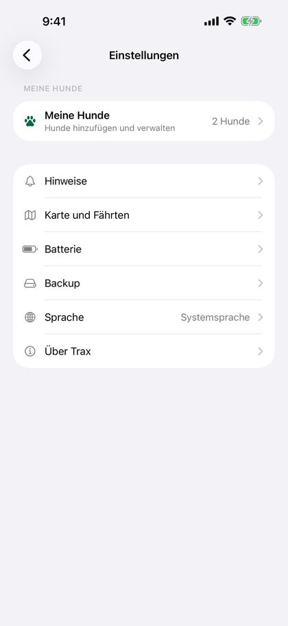
27
Backup und neues iPhone
Sichere deine Fährten, falls du dein iPhone verlierst oder auf ein neues wechselst.
„Automatische Kopie in iCloud Drive“ unter Einstellungen › Backup ist standardmäßig eingeschaltet. Trax legt dann ein Backup im Ordner „Trax“ in deinem eigenen iCloud Drive ab, wenige Sekunden nachdem eine Fährte oder ein Hund gespeichert oder geändert wurde, sodass du nicht selbst daran denken musst. Während eine Fährte läuft, wartet Trax, bis die Fährte gespeichert ist. Unter dem Schalter steht, wann die letzte Kopie abgelegt wurde, oder dass iCloud Drive auf dem iPhone ausgeschaltet ist.
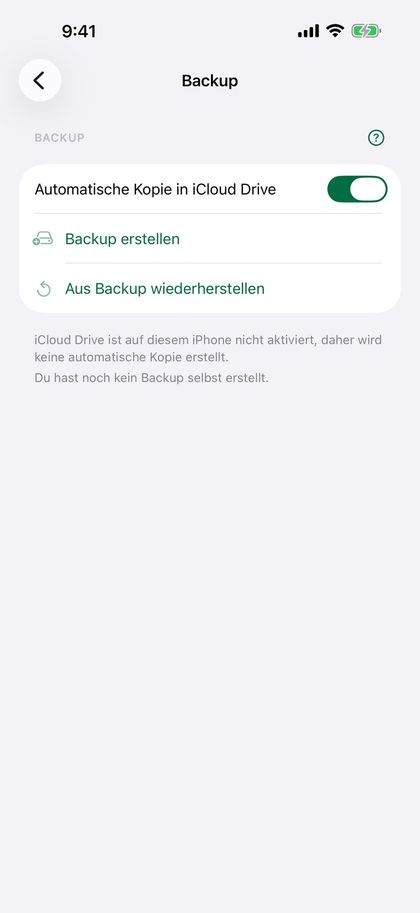
Du kannst auch selbst ein Backup erstellen, mit „Backup erstellen“. Du bekommst eine Datei (.traxbackup) mit allen Fährten und Hunden, die du in Dateien oder iCloud Drive sichern oder dir selbst senden kannst. Unter den Tasten steht, wann du zuletzt eines erstellt hast.
- Neues iPhone oder Trax neu installiert: Trax fragt einmal, ob deine Fährten aus iCloud Drive geholt werden sollen. Wähle „Wiederherstellen“.
- Hast du ein Backup, das du selbst erstellt hast, tippe auf die Datei (sie öffnet sich in Trax) oder wähle „Aus Backup wiederherstellen“ unter Einstellungen › Backup.
- Trax zeigt, wie viele Fährten und Hunde das Backup enthält, und fragt, bevor etwas hinzugefügt wird.
Beim Wiederherstellen werden nur Fährten und Hunde hinzugefügt, die fehlen. Nichts wird gelöscht oder überschrieben. Ein Hund mit demselben Namen wie ein Hund auf dem iPhone wird zum selben Hund. Alles passiert auf dem iPhone und in deinem eigenen iCloud Drive, ohne Konto.
28
Fährten löschen und wiederherstellen
Tippe auf dem Startbildschirm auf „Bearbeiten“, um eine oder mehrere Fährten auszuwählen und zu löschen. Du kannst auch eine Fährte öffnen und ganz unten auf der Seite auf „Fährte löschen“ tippen. Du wirst immer gefragt, bevor etwas gelöscht wird.
Wichtig: Gelöschte Fährten können nicht wiederhergestellt werden, es sei denn, sie sind in einem Backup. Exportiere die Fährte vorher als GPX oder PDF, wenn du sie behalten willst.
Stoppt die App mitten beim Legen einer Fährte, zum Beispiel weil der Akku des iPhone leer war, ist die Fährte unterwegs gespeichert worden. Wenn du Trax das nächste Mal öffnest, steht oben „Unfertig gelegte Fährte“. Wähle „Fortsetzen“, um weiterzulegen, „Beenden“, um die Fährte so zu sichern, wie sie ist, oder „Löschen“.
Stoppt die App mitten beim Arbeiten einer Fährte, steht die Fährte unter „Bereite Fährten“ mit „Fährte läuft“. Öffne sie und tippe auf „Fortsetzen“, um aus der Pause weiterzumachen. Willst du lieber neu beginnen, tippe auf den Zurückpfeil und auf „Hundefährte verwerfen“.
29
Tipps und Fehlerbehebung
- Die Fährte ist zackig oder hat Lücken: Prüfe, ob Trax Zugriff auf deinen Standort hat und „Genauer Standort“ eingeschaltet ist.
- GPS ist in dichtem Wald, in steilen Tälern und zwischen hohen Gebäuden ungenauer. Warte am besten, bis sich die Position stabilisiert hat, bevor du auf „Start“ tippst.
- Der Stromsparmodus kann zu weniger GPS-Punkten führen. Lade das iPhone vor langen Fährten oder schalte „GPS-Stromsparmodus“ unter Einstellungen › Batterie ein.
- Du siehst die Fährte nicht auf dem Sperrbildschirm? Prüfe, ob Live-Aktivitäten unter Einstellungen › Trax auf deinem iPhone eingeschaltet sind.
- Die Mitteilung, dass das Fährtenalter erreicht ist, kommt nicht? Prüfe, ob Mitteilungen für Trax unter Einstellungen › Trax › Mitteilungen auf deinem iPhone eingeschaltet sind, und schalte „Dringende Mitteilungen“ ein, wenn du Fokus verwendest.
- Du hörst die Sprachansagen nicht? Prüfe, ob „Hinweise“ und „Hinweise vorlesen“ unter Einstellungen › Hinweise › Hinweisart eingeschaltet sind und die Lautstärke aufgedreht ist. Tippe auf „Beispiel anhören“, um es zu testen.
- Du empfängst die Fährte nicht? Sende sie per AirDrop oder E-Mail, nicht mit Nachrichten. Prüfe, ob der Dateiname auf .trax oder .gpx endet, und versuche es mit „Importieren“ auf dem Startbildschirm.
- Fragen oder Probleme? Tippe auf „Feedback senden“ unter Einstellungen › Über Trax oder sende eine E-Mail an post@trax-dogtracking.no.
30
Datenschutz
Alle Fährten werden auf deinem iPhone gespeichert. Trax hat kein Konto und keinen eigenen Server. Nutzt du iCloud Drive, legt Trax ein Backup im Ordner „Trax“ in deinem eigenen iCloud Drive ab. Das kannst du unter Einstellungen › Backup ausschalten. Deine Fährten werden nur geteilt, wenn du sie selbst exportierst.
Das Bild für soziale Medien wird auf deinem iPhone erstellt. Wählst du „Bild sichern“, fragt iOS, ob Trax Fotos zu „Fotos“ hinzufügen darf. Trax kann nur Fotos hinzufügen, deine Fotos aber nicht sehen. Wählst du ein eigenes Foto, über das die Fährte gelegt wird, sieht Trax nur dieses eine Foto.
Um das Wetter abzurufen, werden Position und Zeitpunkt an Apple Wetter gesendet, wo die Fährte begann und wo der Hund die Fährte startete. Apple verknüpft die Anfrage nicht mit dir oder deinem Apple Account, und es werden keine Trainingsdaten gesendet.
Die vollständige Datenschutzerklärung findest du unter Einstellungen › Über Trax › Datenschutzerklärung.